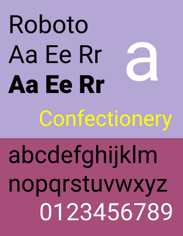

History of Roboto Font.
Roboto is a sans-serif typeface designed by Christian Robertson and commissioned by Google. It was first released in 2011 as the default font for Android devices and has since become one of the most widely used web fonts.
Design Of Roboto.
Roboto was created with the goal of offering a simple, contemporary font for use on electronic devices. Its distinctive letter shapes, large x-height, and slightly rounded design all contribute to its excellent readability on screens of all sizes. Roboto also offers a variety of styles, such as light, regular, medium, bold, and black, allowing for a range of applications, from body text to headings.
Roboto's design was greatly influenced by the geometric sans-serif font style, which puts an emphasis on clarity and simplicity. However, it also has humanist-inspired components, like its slightly rounded letters, which give the font a warm and welcoming vibe. Roboto is a flexible font that can be used in a variety of design contexts thanks to this combination.
Present Day Applications of Roboto.
Roboto is currently utilised on countless websites and applications. Due to its high readability, it is a preferred choice for body text. It is also used in headings and other design elements to give them a contemporary, clean appearance. Roboto is additionally free to download and is licenced under the Apache License. It has been optimised for use on digital devices.